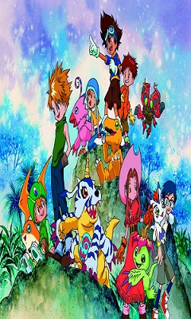

Anime of the day

Digimon Adventure
Butter-fly
Bildungsroman
Adventure
Top Series


Representative song
Butter-fly
Digimon Adventure's opening song released in 1999.
It's the first opening song of the Digimon series, the ending song of the last scene of the series, and 16 years later,
it's the theme song of Digimon Adventure tri. It's truly the beginning and end of Digimon.